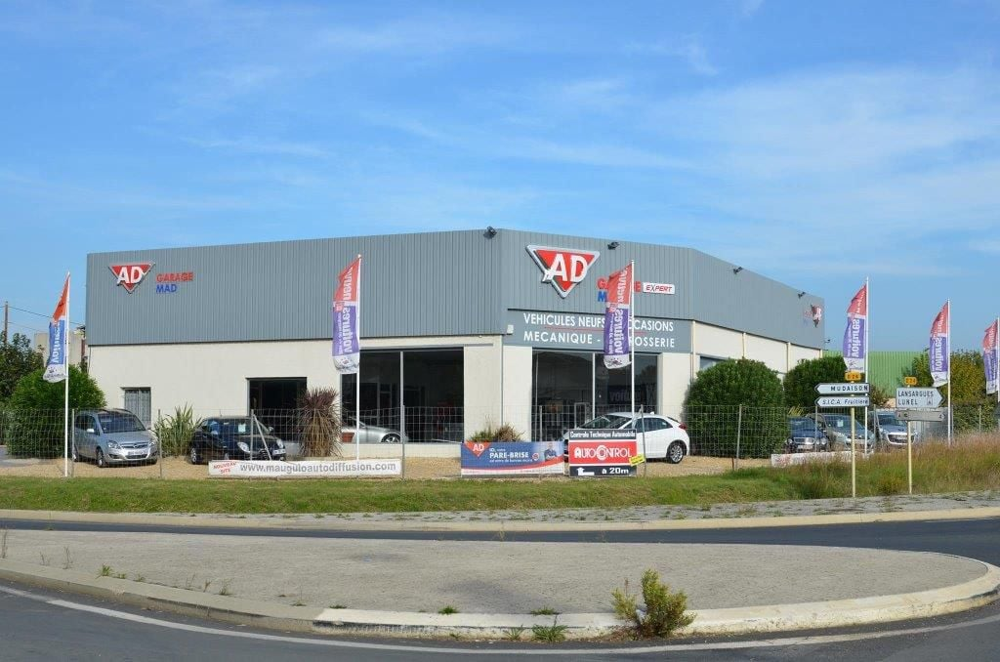
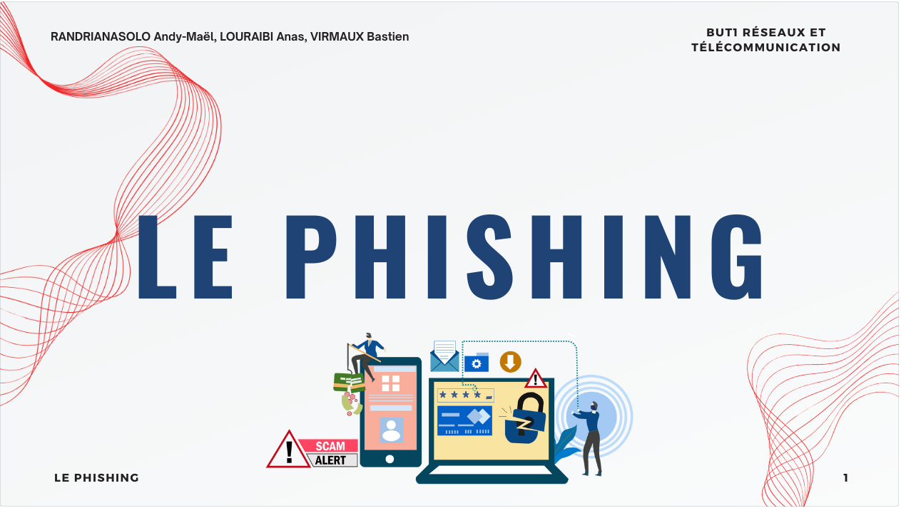

À propos de moi
RANDRIANASOLO Andy-Maël
Étudiant en 1ère année de BUT Réseaux et Télécommunications
J’ai choisi cette orientation car je souhaite à l’avenir travailler dans la cybersécurité ;
en effet, ce domaine m’intéresse beaucoup car je souhaite me porter volontaire pour que les données
les plus sensibles d’une entreprise soient protégés et que personne ne subisse des cyberattaques.
Je fais preuve d'esprit d'équipe mais aussi autonome, responsable et patient.
Je suis à la recherche d’un stage de deux mois pour la deuxième année, à compter du 1er avril 2025.
Formations
Bachelor Universitaire Technologique Réseaux et Télécommunications - 1ère année
IUT d'Aubière
2023-2024
Inscription en Bachelor Universitaire Technologique Informatique - 1ère année
IUT d'Aubière
2022-2023
Qualités
Autonomie
Je suis capable d'accomplir mes tâches par moi-même sans avoir à demander de l'assistance.
Esprit d'équipe
Je suis coopératif avec mes pairs afin de pouvoir accomplir une tâche.
Responsabilité
Je suis capable de respecter les attentes et objectifs de ma tâche.
Patience

Lors d'un retard ou d'un imprévu, je ne relâche pas et cherche des solutions au problème.
Compétences techniques
Réseaux
J'ai acquis mes compétences en réseau, notamment sur Packet Tracer où l'on devait créer des topoologies réseau pendant les TDs.
Programmation Python
Je suis capable de créer des programmes basiques sur Python.
Télécommunications
Exemple : Lors d'un TP nous avions analysé un réception TNT
Système Linux
Je sais utiliser la ligne de commande dans un système Linux.
Programmation WEB
Je suis capable de créer un site WEB en HTML et CSS.
Expérience professionnelle

Stage en entreprise à Garage MAD - 3ème
Mauguio
Janvier 2018
En 3ème, mon stage en entreprise se déroulait dans un garage.
Mes missions étaient variées, en fonction des besoins ; je devais m'occuper de vérifier la
pression des pneus, mettre de l'huile de moteur, faire la vidange ou encore changer les plaquettes
de freins.
Grâce à ce stage, j'ai pu développer quelques compétences comme l'autonomie et la responsabilité
car j'ai su tout au long du stage comment faire ces tâches par moi-même après avoir été guidé.
Je suis aussi ponctuel car pendant la semaine je n'ai jamais été en retard.
Projet

Situation d'Apprentissage et d'Évaluation 11 - Présentation du phishing (R&T)
21 Septembre 2023 - 4 Octobre 2023
Notre projet était de présenter un sujet en lien avec notre formation.
Dans notre cas, notre sujet était le phishing ;
En premier lieu, nous devions faire un document présentant ce
que c'était, ses procédés, des exemples et les pratiques pour s'en protéger.
En deuxième lieu, nous avions ensuite la tâche de faire un diaporama sur ce sujet même
pour le présenter à l'oral.
Grâce à ce projet, j'ai su faire preuve d'esprit d'équipe car non seulement c'était un travail de groupe
mais j'ai fait part de ma contribution en proposant des idées afin de compléter et d'harmoniser
au mieux notre travail.